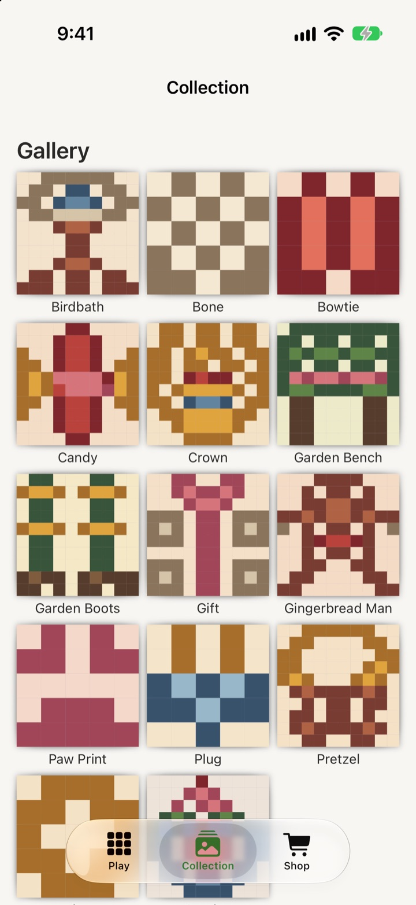
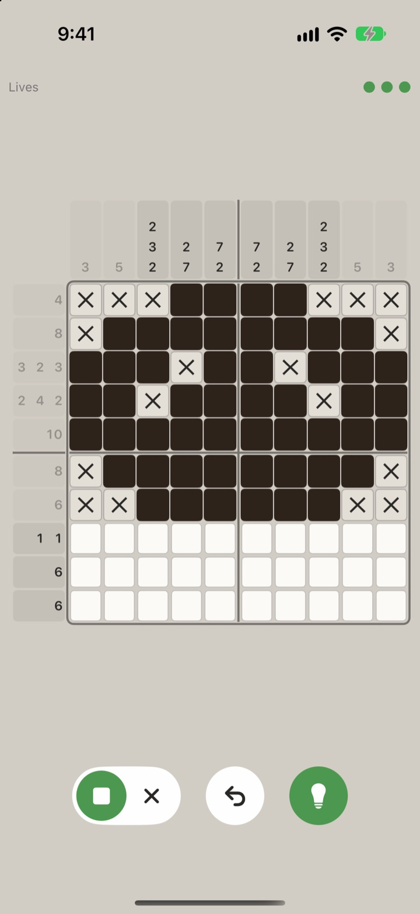
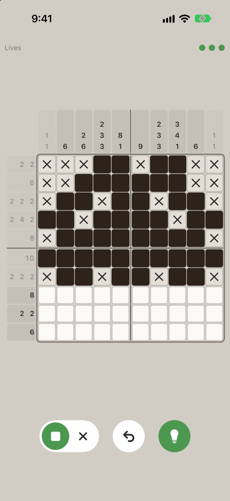
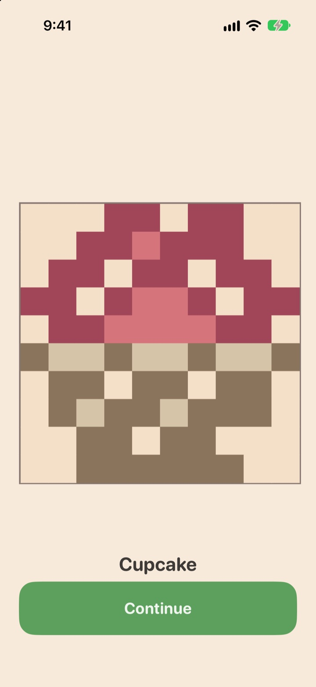
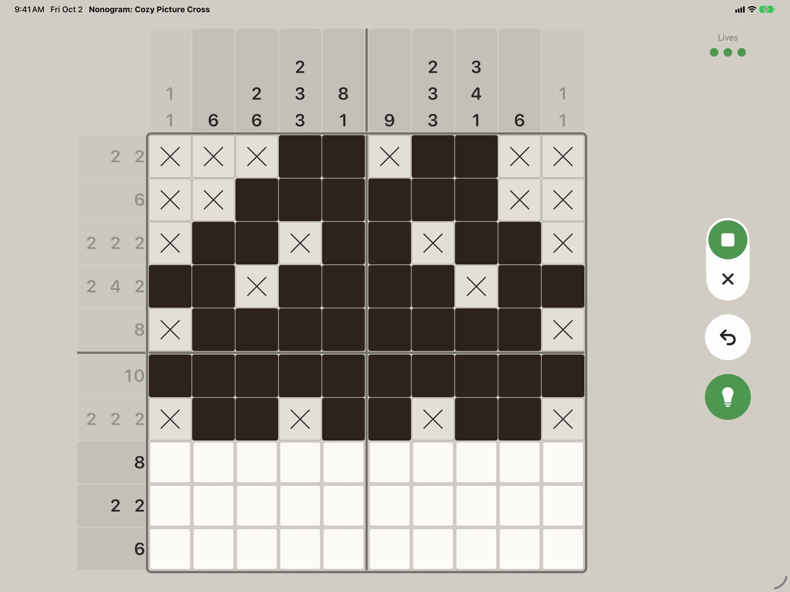

Cozy picture-cross puzzles for iPhone and iPad
The clues are numbers. The answer is a picture.
Every puzzle is a grid of empty squares and a margin full of numbers. Work out which squares are filled, and a small pixel picture comes out the other side.
- 195pictures to solve
- No timersno energy meter
- 7 languagesone download




It remembers where you stopped
Home · Daily puzzle · Monthly challenge
Open the app, land on your puzzle.
The home screen opens on whatever you were in the middle of, with the next puzzle queued beside it, today's daily puzzle underneath, and the monthly challenge's own progress line below that.
- Coins and a day streak sit at the top
- Coins buy hints, a second chance and cosmetics
- They never buy access to a puzzle
Ten by ten, and room to think
Board · Clues · Lives
Count without losing your place.
Clue strips run along the top and the left, the board is divided into blocks of five, and three controls sit under your thumb: a fill-or-cross toggle, undo, and hint.
The three dots are the attempt’s lives. Three mistakes end that attempt, not the puzzle, which stays open and can be started again straight away for nothing.
Every solve has a name
Reveal · Collection
The grid becomes the picture.
Finish the grid and the squares drop their outlines and turn into the picture they were describing all along. Solved pictures go into a gallery, each with its own name. Seeing the gaps is most of the reason to come back.
- 195 pictures across seventeen packs
- A new daily puzzle each day
- Everything ships inside the app, so solving needs no connection
On iPad it is a bigger board, not a bigger phone.
The iPad layout is drawn for the iPad: in landscape, the grid takes the width it is given, the clue strips grow with it, and the fill, undo and hint controls sit along the right edge. Your progress follows you between devices through your own iCloud account.

Cozy on purpose.
A puzzle game that respects your evening: no meter to wait on, nothing to refill, and every puzzle solvable by reasoning alone.
Reasoning, not guessing
Every puzzle in the game can be solved by logic alone. No coin flips, no trial and error.
No waiting
No energy bar, no timers between puzzles. Every puzzle is open from the first launch.
Free undo, free retry
Undo is unlimited. If an attempt ends, starting it again is instant and costs nothing.
195 pictures to find
Across seventeen packs, plus a daily puzzle. All of them ship inside the app, so a solve needs no connection.
No subscription
Optional one-off items only, and coins never buy access to a puzzle.
iPhone and iPad
One download, iOS 18 and later, with a board drawn for the iPad and progress that follows you through your own iCloud account.
Questions, answered.
I have never played one of these. Is it hard?
The first few puzzles are five squares across and teach you the one rule you need. It is logic, not arithmetic — the numbers describe runs of filled squares, and you never have to add anything up.
What happens when I get one wrong?
An attempt carries three lives. Three wrong squares end that attempt and clear the board. The puzzle itself stays open, and starting it again is immediate and costs nothing. Undo is free and there is no limit on it.
Is there an energy bar or a timer between puzzles?
No. There is nothing to wait for and nothing to refill. Every puzzle in the app is unlocked from the first launch.
What can I buy, and do I have to?
Optional one-off items only: coins, and a few conveniences and cosmetics. There is no subscription. Coins are never needed to open a puzzle, and the pictures that unlock new areas cannot be bought at any price — they are earned by solving. Current prices are displayed in the App and on the App Store, and may vary by region.
Will my progress move to my other device?
Yes, through your own iCloud account, as long as you are signed in to the same Apple Account on both. Your saves are also kept on the device itself, so the game works when you are offline.
Who made it?
A very small independent studio. If something is broken or you have an idea, the support address below reaches a person.